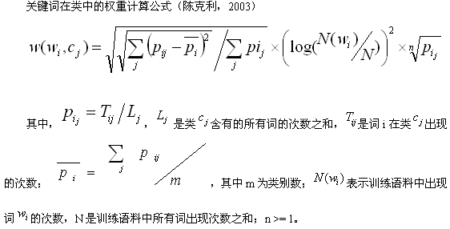
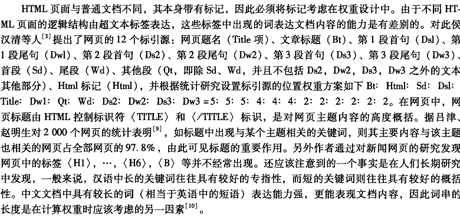

基于特征词聚类的医疗广告精准投放
张沈鹏 2008年3月
索引
概要
通过特征词/短语,实现信息进行实时分类、聚合.
可应用于: 广告精准投放,关联文章推荐,用户交友配对,Tag自动生成等.
本文将实现特征词聚类,并在其基础上创建一个广告投放系统.
背景知识
-
什么是聚类?
聚类是把一个集合分成几个子集的过程。聚类后，各子集中的内容相似度极大，而子集间的相似度小。
-
什么是特征词/短语?
具有鲜明地类别特征的词/短语.如“骨质增生”就是 健康 -> 骨科 的特征关键字.
用户的兴趣爱好也可以用一组特征关键词来表示,如“魔兽争霸 科幻世界 李白”.
-
特征词权重
量化的特征词所能代表主题的程度,最著名的是TF*IDF.
TF( Term Frequency ) : 关键词的频率,TF ＝ 关键词出现的次数/总字数.
IDF( Inverse Document Frequency ) : 逆文本频率指数,IDF ＝ log(出现的文本数/文本总数).
TF*IDF,它能反映文本中一个词所能够表示该文本主题能力.
TF*IDF有不少进行细微的优化的变形,加入了信息增益、期望交叉熵、文本证据权、χ2 统计量等因子.
-
Bloom Filter简介
Bloom Filter 能高效的判断一个集合中是否存在一个元素。但有可能会把不属于这个集合的元素误认为属于这个集合。
基本原理为:用k个的哈希函数，将元素映射到{1,…,m}的桶中。对任意一个元素x，第i个哈希函数映射的位置k[i](x)就会被置为1（1≤i≤k）.在判断y是否属于这个集合时，我们对y应用k次哈希函数，如果所有k[i](y)的位置都是1（1≤i≤k），那么我们就认为y是集合中的元素，否则就认为y不是集合中的元素.
由于不需要保存原始数据，Bloom Filter空间效率极高.常用于海量数据的处理(如垃圾邮件的黑名单).
Bloom Filter发生错误定位的概率
f = (1-e-kn/m)k = (1-p)k其中,m为Bloom Filter的桶大小,n为元素的个数,k为哈希函数的个数,p是位置为1的概率.
从而推算得到当p = 1/2即k=ln2*(m/n)时,错误率最小.因为p是位数组中某一位仍是0的概率，所以p = 1/2对应着位数组中0和1各一半。换句话说，要想保持错误率低，最好让位数组有一半还空着。
另外可以得到在错误率不大于є的情况下，m至少要等于n*log2(1/є)才能表示任意n个元素的集合。
对于Bloom Filter有一些相应的优化,比如由文献6可知,可以通过两个hash函数来模拟多个hash函数.
文献5便提到了计数型Bloom Filter在挖掘频繁项中的应用.我们将利用Bloom Filter挖掘常用短语.
程序框架
程序分为以下几大模块
-
内容抓取
-
训练集的抓取
训练集主要有两个来源 1.万方文献库 2.各大门户以及垂直门户网站
训练集主要的样本文本的内容主要分为:标题,关键词/短语(即标引),内容
标题,关键词,是用于主题描述词语,文本主题表示功能强,将是重点研究的对象.
万方论文已经表明关键词,很方便采集.
门户网站可以通过其页面中类似<meta name="keywords" content="非典 中医疗法">的meta标签获取.
本项目中,训练预料中万方抓取的文章数目
- 社会科学 1846
- 经济财政 167958
- 教科文艺 184067
- 基础科学 249237
- 农业科学 14960
- 工业技术 177797
- 医药卫生 436514
其中总文章数为1232379(备注:万方总文献数为13200803,有由于条件限制,只抓取了部分),但着重抓取了与医疗相关的文献.
待分类页面的抓取
也分两个部分 1.内容页面 2.广告页面/内容
其中内容部分以当当网(dangdang.com)的商品为示例
-
抓取的程序框架,该部分使用python实现,相关的库有urllib,thread,BeautifulSoup,bsddb等
网页下载
内容提取
断点续抓
-
-
特征词/短语提取
该部分采用C++实现,并提供python接口
对于标题,在搜狗词库的基础上采用最大匹配法分词(基于双字哈希机制),并通过统计发现常用短语(长度为5-9).对于未登录词,采用长度为7的全切法.
长度选取的依据是的心理学研究,大部分人一眼能够记住的字符长度为7+2
最后通过统计得到各个分类的特征词和其相应的权重
对应正文部分,通过基于Bloom Filter的频繁集挖掘,也可以过滤出特征短语(长度为2-9)(每个长度用一组Bloom Filter分别统计)

另外从文献中可以得知,n=3时效果最好
因为是针对医疗广告投放(加之训练预料不完整),我简化了类别的数目,仅仅分为医学类和其他类.
统计而得医学有词/词组40083272,其他为48704735,共计88788007个.领域常用词表：从各领域词表中按照频率从高到低取词建立的覆域专用词表：由本领域内出现频率大于等于 0.0005%，在其他领0.0001%的词构成的词表。

-
聚类
VSM+余弦夹角
VSM算法将文本看成空间向量，每个维度的值为单词的权重，然后将一个类别中的所有文本向量相加得到该类别的特征向量.分类时，计算文档与每个类别特征向量的相似度，相似度最大的类向量对应的类别作为该文档的类别。
-
相关应用的构建 -- 精准广告投放
基于特征词库进行最大匹配切词,得出文章关键词
基于特征词进行搜索广告
当没有匹配广告时,通过特征词对文章进行分类投放该分类的广告
框架选取pylons
-
可选部分:流行词的识别
作者介绍
张沈鹏,电子科技大学08年毕业,双学位,生物医学工程及计算机科学与技术.
熟悉Python,Javascript,Html/Css,C++,D等各种编程语言,从事互联网相关的应用开发.
Blog : zsp.javaeye.com
Email/Msn/Gtalk : zsp007@gmail.com
参考文献
- 《基于文本分类中特征提取的领域词语聚类》,《基于关键短语的文本分类研究》刘华(暨南大学 华文学院/海外华语研究中心)
- 《一种中文分词词典新机制--双字哈希机制》 李庆虎,陈玉健,孙家广(清华大学 计算机系)
- 《数学之美 系列九--如何确定网页和查询的相关性》
- 《基于N元汉字串模型的文本表示和实时分类的研究与实现》
- 《在数据流中挖掘频繁项》
- 基于大规模真实文本的平衡语料分析与文本分类方法
- 《Less Hashing, Same Performance Building a Better Bloom Filter》
- 《General Purpose Hash Function Algorithms - By Arash Partow》(http://www.partow.net/programming/hashfunctions/)